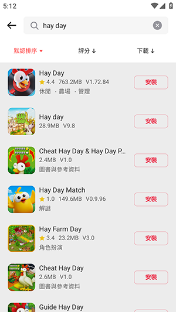
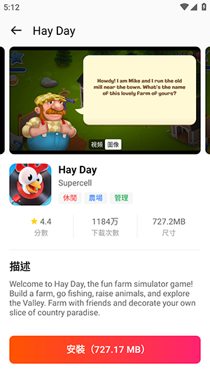

用了 BuffBuff 大半年，那些当初没料到的真实体验
从第一次在搜索引擎里撞进它的页面算起，已经断断续续用了七个多月。这期间换过路由器、切过几次手机、也卸载过又装回来。写下这些，是想把那些上手测评不会告诉你的细碎感受留住。
从第一次在搜索引擎里撞进它的官网页面算起，我断断续续用 BuffBuff 已经七个多月了。中间卸载过一次又装回来——那次是换手机，数据迁移忘了同步登录状态，重新下载的时候才发现它不像我用过的其他商店那样在安装流程里埋什么门槛。简单说就是：当初只是为了补一款 Google Play 上下架的应用才去用它的下载入口，没想着会长久。
那些越用越顺手的地方
刚开始我最纠结的是搜索。总觉得一个第三方商店，数据库能有多大？结果用了两三次就发现它的搜索逻辑做得比我预期的要细——应用名模糊匹配、包名精确匹配、首字母联想三路并行，而且结果排序是精确匹配优先、再按热门度压底。这个细节很重要：很多商店是热门度一把梭，结果把我要的那个老版本挤到第五页以外，BuffBuff 不会。
搜不到的时候试试包名，这个技巧我现在已经形成肌肉记忆了。之前帮朋友找一款工具，应用名怎么打都命中不了，后来在 Google Play 的网页端看到包名 com.xxx.tool，直接贴进去，第一条就是。

下载器也是用得越久越放心。我家宽带不算稳定，晚上经常 Wi-Fi 抖一下就断半秒，断点续传这功能不是锦上添花，是必须的——下载 2GB 出头的那个 RPG 客户端，断了三次全接上了，没有一次重开。它的分段式下载架构我后来去查过资料，每完成一个数据块就写入存储，中断时记录位置，恢复后只拉剩下的，不是那种"假断点续传"（有些商店说是续传，实际重新拉）。
多线程加速的效果也是实打实的。我没做过严谨的 A/B 对比，但 100Mbps 宽带下，4GB 级别的包大概 40 分钟能下来——换单通道估计得一小时以上。4 到 8 个线程动态调整，Wi-Fi 和移动网络切换时会弹确认，这点比某些后台默默跑着就把话费烧了的设计强太多。
那些当初没发现、用久了才暴露的问题
最大的一个，也是我卸载它的那次直接诱因：账号注销没有独立入口。
我那次卸载是因为有段时间出国，Buff 点数攒了两百多没地方花，想着干脆把账号清了省得邮箱里一直收到营销邮件。结果找了五分钟没找到注销按钮——设置里没有，个人中心里没有，最后翻到它的BuffBuff文档才知道得联系在线客服，还要准备订单号、第三方授权信息，处理周期还得 7 到 14 天。
说个反直觉的：一个商店能把搜索做这么细、把下载器做这么稳，却在账号生命周期的另一端留这么大一个口子，这让我对它的产品优先级判断有点困惑。我理解有些小团队不重视注销，但它的体量显然不是小团队了。
还有一个小毛病：后台下载被系统清理后，虽然进度能保住（断点续传的功劳），但通知栏的下载状态偶尔会卡住不动，实际下载还在跑。重新打开 App 刷新一下就好，但第一次碰到时以为挂了，手动取消又重新下了一次，白跑了二十分钟。
哪个功能成了每天离不开的，哪个碰都没再碰
搜索框是真的每天都在开——现在找任何海外应用，我的第一反应不是翻墙去 Google Play 搜、也不是先看官方下载页，直接打开 BuffBuff 搜。它的首字母联想做得很准，输入 N 就能拉出 Notion、Nova、Niagara Launcher 这些常用款，基本不用打完全名。

相反，账号相关的那些东西——Buff 点数充值、钱包、第三方登录绑定——我到现在都没碰过一次。不是不敢，是真的没需要。下载本身不花钱，点数又没找到什么非得用它的场景，钱包余额也没地方消费。感觉那整个账号体系是为另一种用户设计的，跟我没关系。
观感修正：长期用下来的判断变化
当初第一次装的时候我以为它就是一个"海外应用获取中转站"——把 Google Play 上有的东西镜像过来，方便国内用户不用翻墙。现在觉得这个定位说轻了。它真正做对的，是在搜索和下载这两个核心环节上做了扎实的工程优化，而不是只做 UI 套壳。
同样被我低估的是它对网络环境的适配。我在三个不同的网络环境下用过它：家里 100Mbps 电信、公司 500Mbps 联通、手机 5G。每一次它都能自动挑到最优线路、动态调线程数，没有一次需要手动切线路设置。这背后的调度器逻辑应该不简单，不像表面上看起来那么"只是个下载器"。
高估的部分是它的"完整度"——我曾以为一个成熟的商店应该在账号生命周期上闭环（注册、使用、注销一条线），结果它在注销上留了个洞，让整个产品的印象分掉了一截。
去留结论：会不会卸载，什么信号出现就该换
短期不会卸载。理由很实际：搜索够准、下载够稳、不折腾。我试过换另外两款同类应用，要么搜索逻辑是热门度优先找不到冷门包，要么下载器在断网恢复时直接重来，体验都不如它。
但有两个信号出现时我会认真考虑换掉它：第一，Google Play 恢复国内直连（大概率不会）；第二，BuffBuff 开始在下载环节插入强制广告或点数门槛。现在它的下载器是干净的，如果哪天变成"攒够 50 点数才能解锁多线程"，那就到了说再见的时候。
还有个小提醒：如果哪天你也想注销账号，别像我一样卸载了才想起来——先去在线客服那里排上队，处理完再删 App。不然本地数据清了、账号还挂着，邮箱营销邮件该来还是会来。
说了这么多，其实就是一些老用户才会注意到的细碎感受。BuffBuff 不是那种能让我拍大腿喊"太好用了"的产品，但它在核心功能上真的够用，够省心，够不添麻烦。这三点放在一起，已经比市面上一大半同类应用强了。顺手提一句，我用过的那些细碎体验也都整理记录下来了，GitHub、Gitee 和 GitCode 三个镜像仓库都能找到，怕哪个抽了换着看就行。